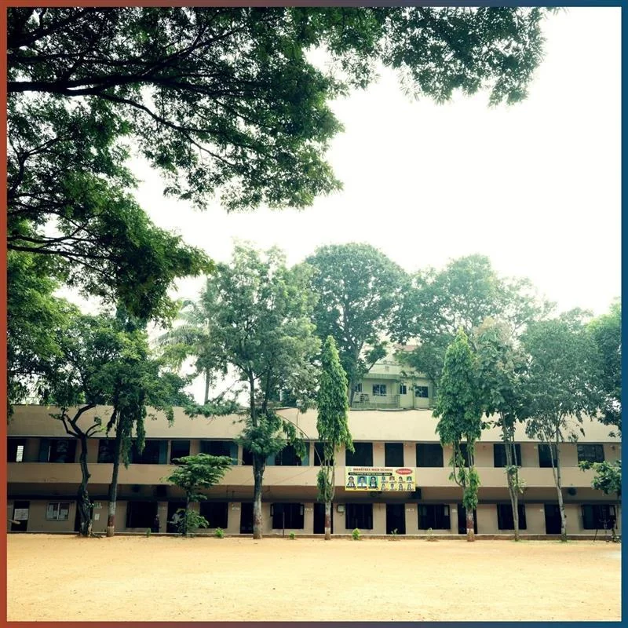

Websters School
Joy in Service Since 1976
Admissions Open!
Kindly contact our office for admissions and enquiries. Websters School offers schooling from Pre-Nursery to Class X.
Contact Us
Joy in Service Since 1976

Trusted by families for nearly 50 years
Websters School shapes young minds through strong academics, self-discipline, and values-based learning. We offer education from Pre-Nursery to Class X on our unified campus at Banashankari III Stage,
Bengaluru, providing continuity, care, and a nurturing learning environment at every stage.
Why Parents Choose Websters
- Academic Excellence – A strong English-medium curriculum aligned with national standards.
- Values & Discipline – A culture that nurtures self-discipline, respect, leadership, empathy, and responsibility.
- Safe & Caring Environment – Every child is known, supported, and encouraged in a secure, inclusive campus setting.
- Holistic Development – A balanced focus on academics, sports, arts, clubs, and co-curricular learning.
- A Legacy of Trust – Generations of alumni who carry Websters values forward, in India and around the world.
Our Commitment to Every Student
At Websters School, we are committed to providing:
- Quality academics rooted in strong fundamentals
- Character formation and essential life skills
- A safe, secure, and inclusive school community
- Balanced growth of body, mind, and spirit
- Mentorship that shapes confident, responsible global citizens
Here, every child is valued. Every talent is encouraged. Every future is filled with possibility.
Programmes We Offer
Nursery School
Pre-Nursery to UKG
Foundational learning through play, language development, art, music, and exploration.
Learn more
Middle School
Classes I–VIII
Strong academics with personalised attention, building communication, teamwork, and scientific thinking.
Learn more
Senior School
Classes IX–X
Exam-focused academics, lab-based science learning, career guidance, and leadership development.
Learn more
Holistic Development – Clubs, competitions, community service, sports, and cultural activities that support all-round growth.
“Intelligence plus character, that is the goal of Education”
— Dr. Martin Luther King Jr
What Sets Websters Apart
- Experienced Teachers – Dedicated educators who guide every child with care, consistency, and expertise.
- Modern Facilities – Well-equipped laboratories, AV rooms, library, playgrounds, and dedicated arts and music spaces.
- Safety First – A CCTV-monitored campus with well-maintained classrooms and play areas.
- Individual Attention – Remedial support, counselling, and mentorship to support every learner’s journey.
- Global Perspective – An alumni community thriving worldwide, preparing students for opportunities beyond borders.